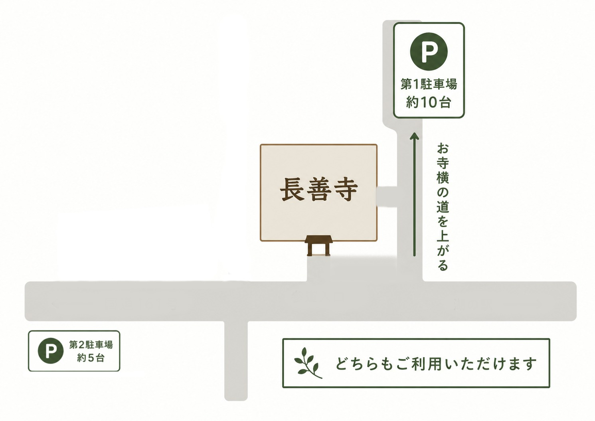

ACCESS
アクセス
長善寺へお越しの方へ、住所・地図・駐車場についてのご案内です。
LOCATION
所在地
- 寺院名
- 長善寺
- 住所
-
〒520-1803
滋賀県高島市マキノ町小荒路581 - 駐車場
- 駐車場は2か所あります。第1駐車場はお寺の横の道を上がった先にあり、約10台駐車できます。 第2駐車場は道沿いにあり、約5台駐車できます。どちらもご利用いただけます。
- お問い合わせ
- 法事・供養、座禅体験、永代供養墓、見学などについては、事前にご相談ください。
Googleマップやカーナビでお越しの場合は、住所または「長善禅寺」で検索してください。
行事や法事、座禅体験などでお越しの場合は、日時や人数によりご案内が変わる場合があります。必要に応じて事前にお問い合わせください。
PARKING
駐車場案内
お車でお越しの方は、下記の駐車場案内図をご確認ください。 駐車場は2か所あり、どちらもご利用いただけます。
第1駐車場は、お寺の横の道をそのまま上がった先にあります。約10台駐車できます。 第2駐車場は、道沿いにあります。約5台駐車できます。
明確な区画線がない場所もありますので、複数台でお越しの場合や場所が分かりにくい場合は、事前にお問い合わせください。

CONTACT
お問い合わせ
座禅体験、法事・供養、永代供養墓、その他お寺に関するご相談は、内容を添えてお問い合わせください。